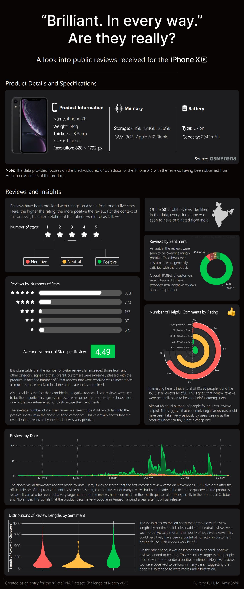

"Brilliant. In every way." Are they really?
5,010 iPhone XR reviews, and the 6.4% that shaped trust the most.

The Problem
For the DataDNA Dataset Challenge (March 2023), the brief was to test whether the iPhone XR actually lived up to Apple's marketing promise, using 5,010 real Amazon India reviews of the black 64GB edition. This project was not just about averaging star ratings, but examining what was actually driving sentiment and which reviews people trusted enough to act on.
Every one of the 5,010 reviews in the dataset originated from India specifically, not a global sample. This is a picture of how one national market responded to the phone, not a universal verdict, and the analysis treats that as a defined scope.
The Approach
Sentiment mapped from the 1–5 star scale into negative/neutral/positive buckets, then cross-analysed against three signals: how many people marked a review "helpful," when reviews were posted relative to the product's India launch, and how review length varied by sentiment.
The Outcome
On the surface, the marketing claim holds up, with an average rating 4.49/5, 88.84% positive, 8.1% negative. But helpfulness complicates that: 1-star reviews, only 6.4% of the total (319 of 5,010), pulled in 10,105 helpful votes, nearly matching the 10,330 votes earned by the far more common 3-star reviews.
The full rating breakdown makes the "extremes over middle" pattern sharper: 3,731 five-star reviews and 720 four-star reviews dwarf everything else, but among negative ratings, 1-star (319) comfortably outnumbers 2-star (87) — when people were unhappy, they tended toward the most extreme rating available rather than a moderate one. That same polarisation shows up in the helpfulness data: 2-star reviews drew only 109 helpful votes total, while the far rarer but more extreme 1-star reviews pulled in over 10,000.
The adoption timeline adds another wrinkle: reviews stayed thin for three quarters after the November 2018 India launch, then spiked in October–November 2019. And sentiment intensity drives length more than positivity does, with neutral reviews being the shortest by far, while both positive and negative reviews ran long.
Readers weight rare, extreme negative reviews disproportionately heavily when deciding whether to trust a product.